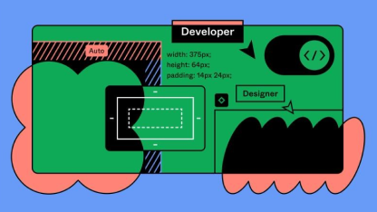

精選文章
Vision Pro 登場！Vision Pro UI/UX 設計重點大公開 (上)
UI/UX 新知
2024/02/10

給設計師和工程師的 Figma-Dev Mode 開發模式使用指南 (下)
UI/UX 新知
2023/11/22
給設計師和工程師的 Figma-Dev Mode 開發模式使用指南 (上)
UI/UX 新知
2023/10/18
虛擬實境 (VR) 介面設計對使用者沈浸感影響的研究
數位產品設計
2024/02/10
想打到目標受眾？先讓設計師跟你都瞭解他們痛在哪！
數位產品設計
2024/02/10
React vs. Vue，哪種前端框架比較好用？從三大面向談起
前端開發
2024/02/10
Vision Pro 來了！UIUX 設計師的未來在哪裡？
UI/UX 新知
2023/07/10